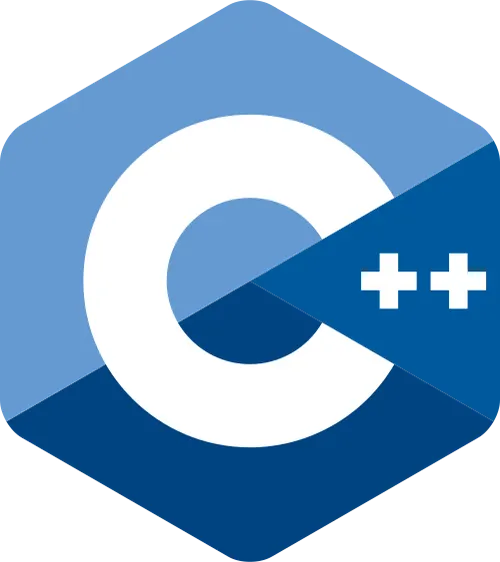

C++ Beginner
Fast, strongly typed, and system-level — the backbone of high-performance software.
Table of Contents
Structure & Output
C++ is a compiled, strongly-typed language. Every execution begins inside the main() function. Statements end with a semicolon, and output uses std::cout.
#include <iostream> // This is a single-line comment /* This is a multi-line comment */ int main() { std::cout << "Hello, World!" << std::endl; return 0; }
g++ main.cpp -o main, then run the executable with ./main.
Variables & Data Types
C++ is statically typed: you must explicitly declare the data type of a variable before using it. This type cannot change at runtime.
int age = 25; double height = 1.68; char grade = 'A'; // single quotes for char bool active = true; const int DAYS_IN_WEEK = 7; // read-only constant // C++11 Type deduction auto score = 98.5; // deduced as double
Operators
C++ uses standard symbols for mathematical logic, assignments, and side-by-side value comparisons.
// Arithmetic int sum = 10 + 3; // 13 int mod = 10 % 3; // 1 — modulo // Integer division pitfall double result = 10 / 3; // → evaluates to 3.0 (int truncation) double fixed = 10.0 / 3; // → evaluates to 3.33333... // Comparisons bool isEqual = (5 == 5); // true bool isUnique = (5 != 3); // true // Logical bool check = (true && false); // false — AND bool match = (true || false); // true — OR
Strings & Input
To use text strings safely instead of old C-style char arrays, include the <string> header. Reading input from the user can be done via std::cin.
#include <string> #include <iostream> std::string greeting = "Hello, C++!"; std::cout << greeting.length() << std::endl; // 10 std::string name; std::cout << "Enter your first name: "; std::cin >> name; // reads until the first space // To read a full line of text including spaces: std::string fullName; std::getline(std::cin, fullName);
Conditionals
C++ uses standard scoping patterns via blocks nested inside if, else if, and else frameworks alongside structural switch setups.
int score = 72; if (score >= 90) { std::cout << "Grade: A"; } else if (score >= 75) { std::cout << "Grade: B"; } else if (score >= 60) { std::cout << "Grade: C"; // ← this runs } else { std::cout << "Grade: F"; } // Inline Ternary Operator std::string status = (score >= 60) ? "Pass" : "Fail";
Loops
Perform repetitive computational logic blocks safely using standard for, while, and range-based for loops.
// Classic incremental for loop for (int i = 0; i < 5; i++) { std::cout << i << " "; // 0 1 2 3 4 } // Standard conditional while loop int count = 0; while (count < 3) { std::cout << count << "\n"; count++; }
Arrays & Vectors
Fixed-size built-in arrays require bounds defined at compile-time. Dynamic resizing lists rely on std::vector from the Standard Template Library (STL).
#include <vector> // Fixed Array int nums[4] = {10, 20, 30, 40}; // Dynamic STL Vector std::vector<int> v = {1, 2, 3}; v.push_back(4); // appends 4 to the end v.pop_back(); // pops out the last element // Range-based for loop (C++11) for (int element : v) { std::cout << element << " "; }
Functions & References
Functions require signature declarations detailing returned data types. To pass parameters without expensive memory copying, use references (&).
#include <iostream> // Value passing configuration (copies data) int square(int x) { return x * x; } // Reference passing configuration (modifies original variable) void increment(int &num) { num++; } int main() { int val = 5; increment(val); std::cout << val; // outputs 6 return 0; }